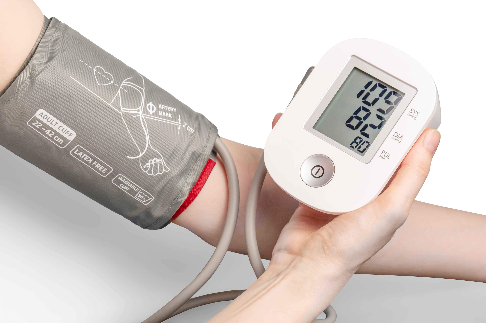
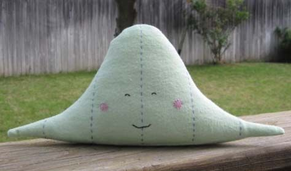
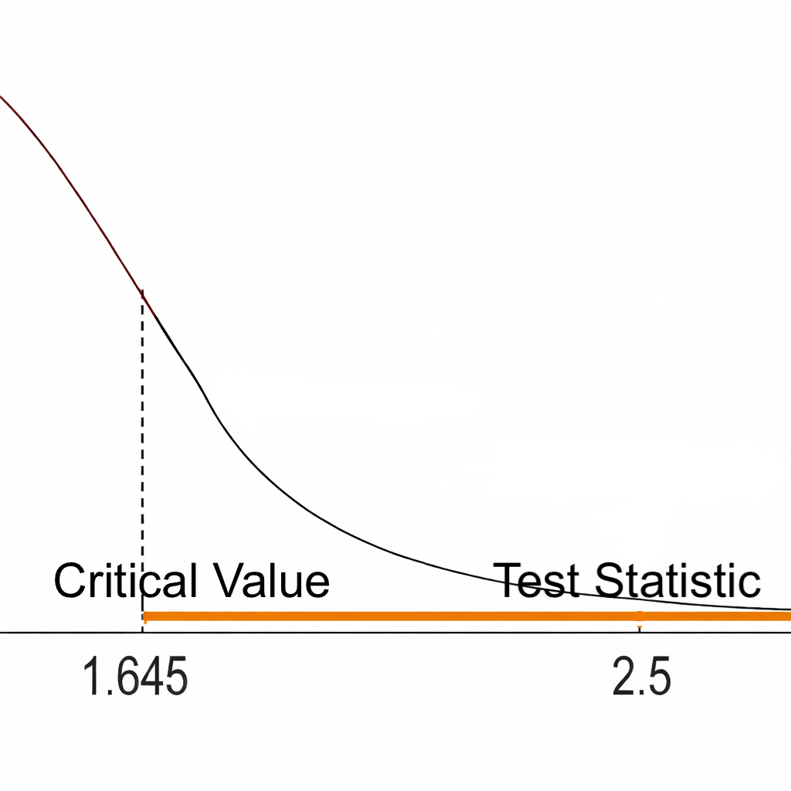
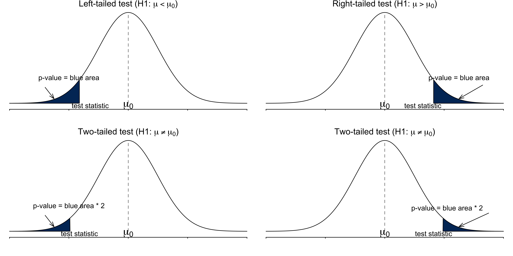
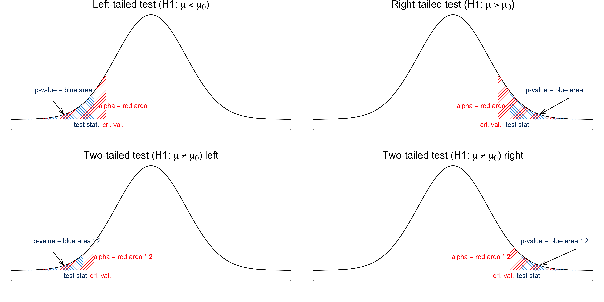
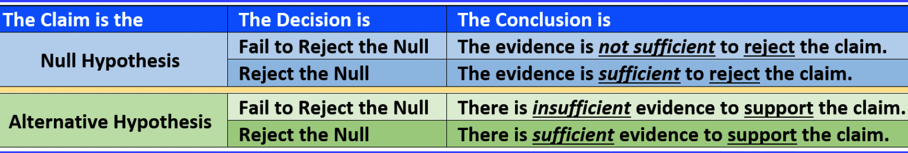

Statistical Inference: Hypothesis Testing
MATH 4720/MSSC 5720 Introduction to Statistics
Dr. Cheng-Han Yu
Department of Mathematical and Statistical Sciences
Marquette University
Department of Mathematical and Statistical Sciences
Marquette University
Hypothesis Testing
What is a Hypothesis Testing?
- A hypothesis is a claim or statement about a property of a population, often the value of a population parameter.
- The mean body temperature of humans is less than \(98.6^{\circ}\) F, or \(\mu < 98.6\).
- Marquette students’ IQ scores has standard deviation equal to 15, or \(\sigma = 15\).
-
Null hypothesis \((H_0)\): a statement that the value of a parameter is equal to some claim value
- No difference, no effects, no change
- status quo
- often represents a skeptical perspective to be tested
- the negation of the alternative hypothesis
-
Alternative hypothesis \((H_1\) or \(H_a)\): a claim that the parameter is less than, greater than or not equal to some value.
- have difference, have effects, have changes
- usually our research hypothesis of some new scientific theory or finding
Null and Alternative Hypothesis
A \(H_0\) claim or \(H_1\) claim?
The percentage of Marquette female students loving Japanese food is equal to 80%.
On average, Marquette students consume less than 3 drinks per week.
- A hypothesis testing 1 is a procedure to decide whether to reject \(H_0\) or not by how much evidence against \(H_0\).
Hypothesis Testing Example
A person is charged with a crime.
A jury decide whether the person is guilty or not.
The accuse is assumed to be innocent until the jury declares otherwise.
Only if overwhelming evidence of the person’s guilt can be shown is the jury expected to declare the person guilty, otherwise the person is considered not guilty.
What should be \(H_0\) and \(H_a\)?
\(H_0:\) The person is not guilty 🙂
\(H_1:\) The person is guilty 😟
Evidence: Photos, videos, witness, fingerprint, DNA
Decision Rule: Jury’s voting
Conclusion: Verdict “guilty” or “NOT enough evidence to convict”
How to Formally Do a Statistical Hypothesis Testing
-
Step 0: Check Method Assumptions
-
Step 1: Set the \(H_0\) and \(H_a\) in Symbolic Form from a Claim
-
Step 2: Set the Significance Level \(\alpha\)
Step 3: Calculate the Test Statistic (Evidence)
(Decision Rule I: Critical Value Method)
Step 4-c: Find the Critical Value
Step 5-c: Draw a Conclusion Using Critical Value Method
(Decision Rule II: P-Value Method)
Step 4-p: Find the P-Value
Step 5-p: Draw a Conclusion Using P-Value Method
- Step 6: Restate the Conclusion in Nontechnical Terms, and Address the Original Claim
- 😎 No worries, we will learn the steps step by step!
The New Treatment is Effective?
A population of hypertension group is normal and has mean blood pressure (BP) 150.
After 6 months of treatment, BP was recorded on 25 patients of this population, and \(\overline{x} = 147.2\) and \(s = 5.5\).
Goal: Determine whether a new treatment is effective in reducing BP.

Step 0: Check Method Assumptions
The testing methods are based on normality or approximate normality by CLT.
Random sample
Normally distributed and/or \(n > 30\)

The New Treatment is Effective?
A population of hypertension group is normal and has mean blood pressure (BP) 150.
After 6 months of treatment, BP was recorded on 25 patients of this population, and \(\overline{x} = 147.2\) and \(s = 5.5\).
Goal: Determine whether a new treatment is effective in reducing BP.
Step 1: Set the \(H_0\) and \(H_1\) from a Claim
- 👩🏫 The mean IQ score of statistics professors is higher than 120.
\(\begin{align}&H_0: \mu \le 120 \\ &H_1: \mu > 120 \end{align}\)
💵 The mean starting salary for Marquette graduates who didn’t take MATH 4720 is less than $60,000.
\(\begin{align} &H_0: \mu \ge 60000 \\ &H_1: \mu < 60000 \end{align}\)
📺 The mean time between uses of a TV remote control by males during commercials equals 5 sec.
- \(\begin{align} &H_0: \mu = 5 \\ &H_1: \mu \ne 5 \end{align}\)
The New Treatment is Effective?
A population of hypertension group is normal and has mean blood pressure (BP) 150.
After 6 months of treatment, BP was recorded on 25 patients of this population, and \(\overline{x} = 147.2\) and \(s = 5.5\).
Goal: Determine whether a new treatment is effective in reducing BP .
- The claim that the new treatment is effective in reducing BP means the mean BP is less than 150. ( \(H_1\) claim )
- \(\small \begin{align} &H_0: \mu = 150 \\ &H_1: \mu < 150 \end{align}\)
Step 2: Set the Significance Level \(\alpha\)
- The significant level \(\alpha\) determines how rare or unlikely our evidence must be in order to represent sufficient evidence against \(H_0\).
- \(\alpha\) is the maximum chance you are willing to take of a false alarm, saying there is an effect when in reality there is no effect: \(\alpha = P(\text{Reject } H_0 \mid H_0 \text{ is true})\)
- An \(\alpha\) level of 0.05 implies that evidence occurring with probability lower than 5% will be considered sufficient evidence against \(H_0\) (Reject \(H_0\)).

Rare Event Rule: If, under a given assumption, \(H_0\), the probability of a particular observed event is exceptional small, we conclude that the assumption is probably not correct (Reject \(H_0\)).
The New Treatment is Effective?
A population of hypertension group is normal and has mean blood pressure (BP) 150.
After 6 months of treatment, BP was recorded on 25 patients of this population, and \(\overline{x} = 147.2\) and \(s = 5.5\).
Goal: Determine whether a new treatment is effective in reducing BP.
- \(\small \begin{align} &H_0: \mu = 150 \\ &H_1: \mu < 150 \end{align}\)
- Set \(\alpha= 0.05\). We are asking: Is there a sufficient evidence at \(\alpha= 0.05\) that the new treatment is effective?
Step 3: Calculate the Test Statistic
- A test statistic is a statistic value used in making a decision about the \(H_0\).
Suppose \(H_0: \mu = \mu_0 \quad H_1: \mu < \mu_0\)
When computing a test statistic, we assume \(H_0\) is true.
When \(\sigma\) is known, the test statistic for testings about \(\mu\) is
\[\small \boxed{ z_{test} = \frac{\overline{x} - \color{blue}{\mu_0}}{\sigma/\sqrt{n}} }\]
Guess what test statistic we use when \(\sigma\) is unknown!
- When \(\sigma\) is unknown, the test statistic for testings about \(\mu\) is
\[\small \boxed{ t_{test} = \frac{\overline{x} - \color{blue}{\mu_0}}{s/\sqrt{n}} }\]
The New Treatment is Effective?
A population of hypertension group is normal and has mean blood pressure (BP) 150.
After 6 months of treatment, BP was recorded on 25 patients of this population, \(\overline{x} = 147.2\) and \(s = 5.5\) .
Goal: Determine whether a new treatment is effective in reducing BP.
- \(\small \begin{align} &H_0: \mu = 150 \\ &H_1: \mu < 150 \end{align}\)
- The test statistic is \(\small t_{test} = \frac{\overline{x} - \mu_0}{s/\sqrt{n}} = \frac{147.2 - 150}{5.5/\sqrt{25}} = -2.55\)
Step 4-c: Find the Critical Value
- The critical value(s) separates the rejection region or critical region (where we reject \(H_0\)) from the values of the test statistic that do not lead to rejection of \(H_0\).
- They depends on whether the test is right-tailed, left-tailed or two-tailed.

Step 4-c: Find the Critical Value
👉 \(z_{\alpha}\) is such that \(P(Z > z_{\alpha}) = \alpha\) and \(Z \sim N(0, 1)\).
👉 \(t_{\alpha, n-1}\) is such that \(P(T > t_{\alpha, n-1}) = \alpha\) and \(T \sim t_{n-1}\).
| Condition | Right-tailed \((H_1: \mu > \mu_0)\) | Left-tailed \((H_1: \mu < \mu_0)\) | Two-tailed \((H_1: \mu \ne \mu_0)\) |
|---|---|---|---|
| \(\sigma\) known | \(z_{\alpha}\) | \(-z_{\alpha}\) | \(-z_{\alpha/2}\) and \(z_{\alpha/2}\) |
| \(\sigma\) unknown | \(t_{\alpha, n-1}\) | \(-t_{\alpha, n-1}\) | \(-t_{\alpha/2, n-1}\) and \(t_{\alpha/2, n-1}\) |
\(z_{0.025} =\) 1.96, \(z_{0.05} =\) 1.64
\(z_{\alpha}\) and \(t_{\alpha, n-1}\) are always positive.
The New Treatment is Effective?
A population of hypertension group is normal and has mean blood pressure (BP) 150.
After 6 months of treatment, BP was recorded on 25 patients of this population, \(\overline{x} = 147.2\) and \(s = 5.5\) .
Goal: Determine whether a new treatment is effective in reducing BP.
\(\small \begin{align} &H_0: \mu = 150 \\ &H_1: \mu < 150 \end{align}\)
The test statistic is \(\small t_{test} = \frac{\overline{x} - \mu_0}{s/\sqrt{n}} = \frac{147.2 - 150}{5.5/\sqrt{25}} = -2.55\)
- The critical value is \(\small -t_{0.05, 25-1} = -t_{0.05, 24} = -1.711\)
Step 5-c: Draw a Conclusion Using Critical Value
If the test statistic is
in the rejection region, we reject \(H_0\).
not in the rejection region, we do not or fail to reject \(H_0\).
Reject \(H_0\) if
| Condition | Right-tailed \((H_1: \mu > \mu_0)\) | Left-tailed \((H_1: \mu < \mu_0)\) | Two-tailed \((H_1: \mu \ne \mu_0)\) |
|---|---|---|---|
| \(\sigma\) known | \(z_{test} > z_{\alpha}\) | \(z_{test} < -z_{\alpha}\) | \(\mid z_{test}\mid \, > z_{\alpha/2}\) |
| \(\sigma\) unknown | \(t_{test} > t_{\alpha, n-1}\) | \(t_{test} < -t_{\alpha, n-1}\) | \(\mid t_{test}\mid \, > t_{\alpha/2, n-1}\) |

The New Treatment is Effective?
A population of hypertension group is normal and has mean blood pressure (BP) 150.
After 6 months of treatment, BP was recorded on 25 patients of this population, \(\overline{x} = 147.2\) and \(s = 5.5\) .
Goal: Determine whether a new treatment is effective in reducing BP.
\(\small \begin{align} &H_0: \mu = 150 \\ &H_1: \mu < 150 \end{align}\)
The test statistic is \(\small t_{test} = \frac{\overline{x} - \mu_0}{s/\sqrt{n}} = \frac{147.2 - 150}{5.5/\sqrt{25}} = -2.55\)
The critical value is \(\small -t_{0.05, 25-1} = -t_{0.05, 24} = -1.711\)
- We reject \(H_0\) if \(t_{test} < -t_{\alpha, n-1}\). Since \(\small t_{test} = -2.55 < -1.711 = -t_{\alpha, n-1}\), we reject \(H_0\).
Step 4-p: Find the P-Value
The \(p\)-value measures the strength of the evidence against \(H_0\) provided by the data.
The smaller the \(p\)-value, the greater the evidence against \(H_0\).
-
The \(p\)-value is the probability of getting a test statistic value that is at least as extreme as the one obtained from the data, assuming that \(H_0\) is true. \((\mu = \mu_0)\)
- For example, \(p\)-value \(= P(Z \ge z_{test} \mid H_0)\) for a right-tailed test.
P-Value Illustration

The New Treatment is Effective?
A population of hypertension group is normal and has mean blood pressure (BP) 150.
After 6 months of treatment, BP was recorded on 25 patients of this population, \(\overline{x} = 147.2\) and \(s = 5.5\) .
Goal: Determine whether a new treatment is effective in reducing BP.
\(\small \begin{align} &H_0: \mu = 150 \\ &H_1: \mu < 150 \end{align}\)
This is a left-tailed test, so the \(p\)-value is \(P(T < t_{test})=P(T < -2.55) =\) 0.01
Step 5-p: Draw a Conclusion Using P-Value Method
If \(p\)-value \(\le \alpha\) , reject \(H_0\).
If \(p\)-value \(> \alpha\), do not reject \(H_0\).
| Condition | Right-tailed \((H_1: \mu > \mu_0)\) | Left-tailed \((H_1: \mu < \mu_0)\) | Two-tailed \((H_1: \mu \ne \mu_0)\) |
|---|---|---|---|
| \(\sigma\) known | \(P(Z > z_{test} \mid H_0)\) | \(P(Z < z_{test} \mid H_0)\) | \(2P(Z > |z_{test}| \mid H_0)\) |
| \(\sigma\) unknown | \(P(T > t_{test} \mid H_0)\) | \(P(T < t_{test} \mid H_0)\) | \(2P(T > |t_{test}| \mid H_0)\) |
The New Treatment is Effective?
A population of hypertension group is normal and has mean blood pressure (BP) 150.
After 6 months of treatment, BP was recorded on 25 patients of this population, \(\overline{x} = 147.2\) and \(s = 5.5\) .
Goal: Determine whether a new treatment is effective in reducing BP.
\(\small \begin{align} &H_0: \mu = 150 \\ &H_1: \mu < 150 \end{align}\)
This is a left-tailed test, so the \(p\)-value is \(P(T < t_{test} \mid \mu = 150)=P(T < -2.55 \mid \mu = 150) =\) 0.01
- We reject \(H_0\) if \(p\)-value < \(\alpha\). Since \(p\)-value \(= 0.01 < 0.05 = \alpha\), we reject \(H_0\).
Both Methods Lead to the Same Conclusion


Step 6: Restate the Conclusion in Nontechnical Terms, and Address the Original Claim

The New Treatment is Effective?
A population of hypertension group is normal and has mean blood pressure (BP) 150.
After 6 months of treatment, BP was recorded on 25 patients of this population, \(\overline{x} = 147.2\) and \(s = 5.5\) .
Goal: Determine whether a new treatment is effective in reducing BP.
\(\small \begin{align} &H_0: \mu = 150 \\ &H_1: \mu < 150 \end{align}\)
There is sufficient evidence to support the claim that the new treatment is effective.
Example Calculation in R
## create objects for any information we have
alpha <- 0.05; mu_0 <- 150;
x_bar <- 147.2; s <- 5.5; n <- 25
## Test statistic
(t_test <- (x_bar - mu_0) / (s / sqrt(n))) [1] -2.545## Critical value
(t_cri <- qt(alpha, df = n - 1, lower.tail = TRUE)) [1] -1.711## p-value
(p_val <- pt(t_test, df = n - 1, lower.tail = TRUE)) [1] 0.008878Example 2: Two-tailed z-test
The milk price of a gallon of 2% milk is normally distributed with standard deviation of $0.10.
Last week the mean milk price was 2.78. This week, based on a sample of size 25, the sample mean milk price \(\overline{x} = 2.80\).
Under \(\alpha = 0.05\), determine if this week the mean price is different.
- Step 1: This is a \(H_1\) claim \(\small \begin{align}&H_0: \mu = 2.78 \\ &H_1: \mu \ne 2.78 \end{align}\)
- Step 2: \(\small \alpha = 0.05\)
- Step 3: \(\small z_{test} = \frac{\overline{x} - \mu_0}{\sigma/\sqrt{n}} = \frac{2.8 - 2.78}{0.1/\sqrt{25}} = 1.00\)
- Step 4-c: \(\small z_{0.05/2} = 1.96\).
- Step 5-c: This is a two-tailed test and we reject \(H_0\) if \(|z_{test}| > z_{\alpha/2}\). Since \(\small |z_{test}| = 1 < 1.96 = z_{\alpha/2}\), we DO NOT reject \(H_0\).
Example 2: two-tailed z-test Cont’d
- Step 4-p: This is a two-tailed test, and the test statistic is on the right \((> 0)\), so the \(p\)-value is \(2P(Z > z_{test})=\) 0.317
- Step 5-p: We reject \(H_0\) if \(p\)-value < \(\alpha\). Since \(p\)-value \(= 0.317 > 0.05 = \alpha\), we DO NOT reject \(H_0\).
- Step 6: There is insufficient evidence to support the claim that this week the mean milk price is different from the price last week.

Example 2 Calculation in R
## create objects to be used
alpha <- 0.05; mu_0 <- 2.78;
x_bar <- 2.8; sigma <- 0.1; n <- 25
## Test statistic
(z_test <- (x_bar - mu_0) / (sigma / sqrt(n))) [1] 1## Critical value
(z_crit <- qnorm(alpha/2, lower.tail = FALSE)) [1] 1.96## p-value
(p_val <- 2 * pnorm(z_test, lower.tail = FALSE)) [1] 0.3173Testing Summary
| Numerical Data, \(\sigma\) known | Numerical Data, \(\sigma\) unknown | |
|---|---|---|
| Parameter of Interest | Population Mean \(\mu\) | Population Mean \(\mu\) |
| Test Type | One sample \(\color{blue}{z}\) test \(H_0: \mu = \mu_0\) | One sample \(\color{blue}{t}\) test \(H_0: \mu = \mu_0\) |
| Confidence Interval | \(\bar{x} \pm z_{\alpha/2} \frac{\sigma}{\sqrt{n}}\) | \(\bar{x} \pm t_{\alpha/2, n-1} \frac{\color{blue}{s}}{\sqrt{n}}\) |
| Test Stat under \(H_0\) | \(z_{test} = \frac{\overline{x} - \mu_0}{\frac{\sigma}{\sqrt{n}}}\) | \(t_{test} = \frac{\overline{x} - \mu_0}{\frac{\color{blue}{s}}{\sqrt{n}}}\) |
| \(p\)-value under \(H_0\) |
\(H_1: \mu < \mu_0\) \(P(Z \le z_{test} \mid H_0)\) |
\(H_1: \mu < \mu_0\) \(P(T_{n-1} \le t_{test} \mid H_0)\) |
|
\(H_1: \mu > \mu_0\) \(P(Z \ge z_{test} \mid H_0)\) |
\(H_1: \mu > \mu_0\) \(P(T_{n-1} \ge t_{test} \mid H_0)\) |
|
|
\(H_1: \mu \ne \mu_0\) \(2P(Z \ge \, |z_{test}| \mid H_0)\) |
\(H_1: \mu \ne \mu_0\) \(2P(T_{n-1} \ge \, |t_{test}| \mid H_0)\) |
Type I and Type II Errors
| Decision | \(H_0\) is true | \(H_0\) is false |
|---|---|---|
| Reject \(H_0\) | Type I error | Correct decision |
| Do not reject \(H_0\) | Correct decision | Type II error |
Back to the crime example: \(H_0:\) The person is not guilty v.s. \(H_1:\) The person is guilty
| Decision | Truth is the person innocent | Truth is the person guilty |
|---|---|---|
| Jury decides the person guilty | Type I error | Correct decision |
| Jury decides the person innocent | Correct decision | Type II error |
Type I and Type II Errors
\(\alpha = P(\text{type I error}) = P(\text{rejecting } H_0 \text{ when } H_0 \text{ is true})\)
\(\beta = P(\text{type II error}) = P(\text{failing to reject } H_0 \text{ when } H_0 \text{ is false})\)